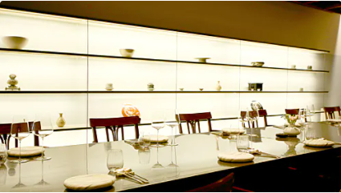
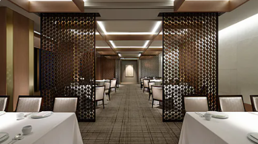

| 레스토랑 | 설 명 |
|---|---|
|  | 레스토랑: 가 온 분 류: 한 식 위 치: 강남구 도산대로 317, 호림아트센터 M층, Seoul, 대한민국 '가온은 오래전부터 이어져온 전통 한식의 지혜를, 한국의 자연에서 얻은 식재료에 담아 요리로 만들어낸다. 이 과정을 주도하는 셰프는 음식에 대한 남다른 해석과 음식 연구에 대한 확신을 통해 가온에서만 경험할 수 있는 한식의 맛을 고객에게 전달한다 가온을 이끄는 김병진 셰프와 한식 문화에 대한 자부심을 다양한 활동으로 표현해온 광주요의 하모니는 이러한 방식으로 현대적인 한식의 특징을 보여주고 있다. 정적이고 차분한 분위기가 어우러진 우아한 다이닝 공간과 서비스도 가온의 음식과 좋은 궁합을 자랑한다. 넓게 확장된 다이닝홀에는 각종 모임이나 비즈니스에 적합한 별실이 마련되어 있어 손님들에게 편안한 식사 환경을 제공한다. |
|  | 레스토랑: 라 연 분 류: 한 식 위 치: 중구 동호로 249, 신라호텔 23층, Seoul, 대한민국 품격 있는 한식 정찬을 선보이는 라연은 전통 한식을 현대적인 조리법으로 세련되게 표현해낸다. 전망 좋은 신라호텔 23층에 자리해 시원한 남산 경관을 감상할 수 있는 이곳은 한국의 전통 문양을 활용한 기품 있는 인테리어가 인상적이다. 우아하고 편안한 식사 경험을 제공하기 위해 구비한 고급 식기와 백자를 형상화한 그릇은 레스토랑이 지향하는 또 다른 차원의 섬세함을 잘 드러낸다. 현대적으로 재해석한 메뉴에 와인을 조합해 즐길 수 있으며, 요구하지 않아도 세심한 배려가 돋보이는 서비스는 이곳의 또 다른 매력이다. |